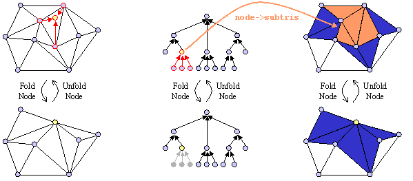

An introduction to the View-Dependent Simplification library.
VDSlib: The Basics [Introduction] | [The Vertex Tree] | [Using VDSlib] | [Standard Callbacks]
Introduction
VDSlib is a software package that implements view-dependent simplification, a geometric level-of-detail algorithm for managing the complexity of polygonal scenes for interactive 3-D graphics. Unlike traditional approaches, which compute discreet levels of detail for each object in a preprocess, VDSlib computes a data structure from which the desired level of detail can be dynamically extracted at run-time. The advantages of this approach include:This page gives a brief introduction to the structures, methods, and use of VDSlib. For a more detailed treatment of the underlying algorithm, check out this SIGGRAPH paper, which introduced the algorithm, or this more recent tech report, which describes the algorithm with a bent towards CAD systems. For full details, look at my dissertation.
- Better fidelity: Because different parts of an object can span multiple levels of detail (for example, distant regions of a large object can be rendered with less fidelity than nearby regions), polygons are used only where they are needed. The result is better overall fidelity across the entire scene for a given polygon count.
- Smoother transitions: Level of detail is adjusted each frame, usually by a few polygons at a time. These gradual and fine-grained changes tend to be less noticible than the sudden "pops", common in traditional static LOD systems, between discreet object resolutions.
- Simplification of large objects: Large complex objects, such as the terrain in a flight simulator or the hull of a ship in a maritime CAD application, present a problem for traditional approaches. Since part of the object may be near the viewer while other parts are quite distant, neither a high-resolution or a low-resolution version of the object is satisfactory: rendering the first will result in unacceptable frame rates, while rendering the second will produce unacceptably poor fidelity. By adjusting the level of detail dynamically at run time, the object can be represented with high fidelity near the viewer and low fidelity far from the viewer, with a smooth degradation of detail in between.
The Vertex Tree
The fundamental data structure used by VDSlib is the vertex tree, a hierarchical clustering of vertices. Vertices from the original model are grouped with nearby vertices into clusters, then the clusters are clustered together, and so on. Leaf nodes of the tree represent a single vertex from the original model; interior nodes represent multiple vertices clustered together, and the root node represents all vertices from the entire model, merged into a single cluster. Each node stores a representative vertex or proxy, which may be one of the original vertices that node represents or some average of those vertices.Folding a node merges all of the vertices represented by that node into the node's single proxy vertex. In the process, triangles whose vertices have been merged together are removed from the scene, decreasing the overall polygon count. Unfolding the node reverses the process one level of the vertex tree, splitting the node's proxy vertex into the proxies of the node's children:

The triangles which will be affected by folding and unfolding a node can be precomputed and stored with the node, enabling very fast fold/unfold operations. This is what VDSlib does; given an input mesh and a clustering of the vertices of that mesh, VDSlib will perform all the computation necessary to simplify and render mesh represented by the tree in a view-dependent fashion.Using VDSlib
This section gives a brief overview of using VDSlib; see the VDSlib Reference Manual for more details.The first task is Building the vertex tree. This is done as a preprocess, initiated by calling vdsBeginVertexTree(). The user begins by specifying the geometry of the original full-resolution model as a sequence of vertices and triangles. The vertices, which will form the leaf nodes of the final vertex tree, are added via vdsAddNode(). Triangles are added with vdsAddTri(). Triangles may be intermixed with the vertices that form their corners, but all geometry must be added between calls to vdsBeginGeometry() and vdsEndGeometry(). Once vdsEndGeometry() is called, the user may start the clustering process.
vdsClusterNodes() takes multiple nodes (up to VDS_MAXDEGREE, a user-defined macro) and clusters them as siblings under a new parent node. Using this function the user should cluster all vertices of the original model, cluster all the resulting nodes, and so on, until all nodes have been clustered into a tree with a single root node. Since the final data structure must form a tree, a node other than the root must have exactly one parent node. In other words, each node may only be clustered once.
Once all nodes have been clustered to form a single rooted tree, a call to vdsEndVertexTree() concludes the preprocess. This function checks the validity of the vertex tree, assigns bounding volumes to nodes, computes which triangles will be affected by fold/unfold operations and assigns those triangles to the apprpropriate node. Since this increases the storage required by each node, the node structures allocated by vdsClusterNodes() are reallocated here. vdsEndVertexTree() returns a pointer to the root of the newly-allocated vertex tree. This tree is now ready for view-dependent simplification and rendering.
Dynamic vertex tree maintenance routines enable view-dependent simplification. Nodes in the vertex tree may be folded or unfolded. The rules that govern folding nodes ensure, first, that all ancestors of an unfolded node will themselves be unfolded, and second, that all folded nodes will have one or more unfolded ancestors (unless the root itself is folded). Nodes on the boundary between folded and unfolded are labeled Boundary nodes; the path of Boundary nodes across the vertex tree forms the active boundary. By definition, only Boundary nodes may be unfolded and only parents of boundary nodes (i.e., nodes with only Boundary nodes as children) may be folded. The function vdsAdjustTreeBoundary walks the active boundary of a vertex tree, applying a user-specifed callback to decide whether to fold or unfold each node on the boundary. By using view-dependent information, such as the distance and angle to the viewpoint, this callback can control the simplification in a view-dependent fashion. Calling vdsAdjustTreeBoundary() continuously thus performs dynamic view-dependent simplification on the object or scene represented by the given vertex tree.
Rendering the current simplification is the final step. This simplification is represented by the current boundary through a vertex tree: in VDS parlance, the current simplification consists of all the subtris of the nodes above the active boundary. For efficiency, these triangles are cached into an active triangle list for rapid rendering; for further efficiency, VDSlib actually used multiple active triangle lists, each associated with a high-level node in the vertex tree. This enables view-frustum culling of the active simplification: if a node is determined to be invisible, its active triangle list need not be rendered. The function vdsRenderTree() traverses the vertex tree, culling and rendering these active triangle lists with user-specified callbacks.
Standard Callbacks
VDSlib uses a number of user-specified callbacks to give the programmer a great deal of freedom. With these callbacks, the developer can control how VDS clusters, culls, simplifies, and renders the model. However, the typical VDS user will not want to write callbacks specifying all of these behaviors before using the library. For this reason VDSlib comes packaged with an optional library of standard callbacks. These callbacks provide simple criteria for folding and unfolding nodes, testing node visibility, and rendering the active triangle list associated with a node. These standard callbacks also serve as examples for developers who wish to write their own callbacks. At this writing, the standard library represents only a few simple algorithms for size-based simplification and view-frustum culling, but over time additional callbacks will be collected into the library for more sophisticated techniques such as silhouette preservation and cell-portal occlusion culling.
[Introduction] | [The Vertex Tree] | [Using VDSlib] | [Standard Callbacks]